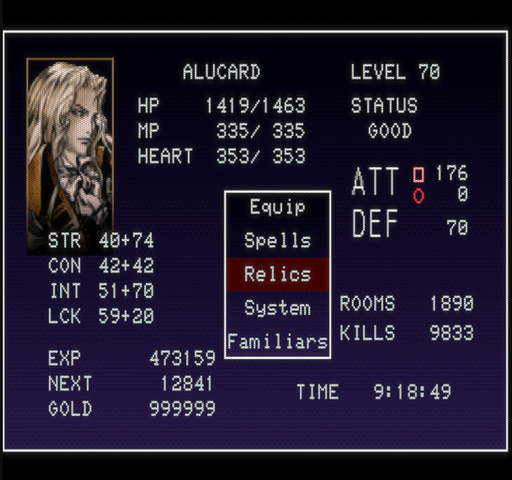

Why I'm porting Symphony of the Night to the Mega CD
GUS
When I was a kid, I was a true hack job. The bad kind. I opened things, yes, but very often I didn't know how to put them back together. Being resourceful with the little you have is something you learn early when you don't have access to much. It's a skill you can learn early, if you have the nerve.
When I was about seven, my first Mega Drive broke. It was the middle of the July holidays and I was stuck at home with no video game. That same day, the family 486 was open for some reason, with a few boards lying on the table. I noticed the contacts on those boards looked a lot like the contacts on a Mega Drive cartridge. I also remembered that my dad had once put some electronic part inside that computer, and after that it ran different games. The logic was airtight. If it fits, it works.

Me and the family 486. The suspect and the scene.
I unscrewed my Sonic the Hedgehog cartridge, took out the board and plugged it into an ISA slot. I even thought ahead. There would be empty pins left over, but if I pushed it to one end of the slot, the first pins would line up. I turned the computer on. Nothing happened. I pulled it out, blew on it, turned it on again. Nothing.

It looked suspiciously similar to the Sega Genesis cartridge slot. Photo: u/Majestic_Buffalo4655 on r/vintagecomputing.
Two weeks later the Mega Drive came back from the repair shop. I put in Sonic. Nothing. I broke the damn cartridge.

The cartridge, found again for this post more than thirty years later.
I remember this story, which caused me a lot of bitterness and suffering as a child, because here I am at 40, by some irony of fate, with a very similar motivation.
Like most people not living under a rock, I've been using AI for everyday stuff for a while now, and honestly, sometimes it's a real blast. My old car broke down, and the proper diagnostic scanner costs five grand. So I plugged the car into my laptop's USB port and asked Claude what was wrong. It worked. It walked me through the whole thing, reading the beeps and bloops from the car's computer and asking me to "look at this and describe it", "listen to that and tell me the rhythm", until we got to "smell this; if it smells like gasoline, we found the problem". Injector number 5 was stuck open, flooding the cylinder and killing combustion, with the fuel draining down into the oil pan. I would never have figured that out on my own.

A 1998 Pajero, a 2015 laptop and a USB cable. The scanner stayed at the dealership.
It felt great. Then I thought about what had just happened. A car from 1998, on a laptop from 2015, using tech from 2026, in the hands of a guy from 1986, and somehow it worked. It reminded me of that Sonic cartridge, and of discovering emulation a few years later, and how incredible all of that was to me. As incredible as this bonkers mix. Which led me to wonder what else I could do now, without coding skills, that I couldn't do before.
I know. It's officially a flood. The homebrew scene is drowning in ports of everything to everywhere, and most of it is trash. We all see it, we all know it. But hear me out. I think most of these projects are missing a crucial ingredient, and it's relentless obstinacy. And, honestly, some aesthetic sense and artistic talent. My years in art direction and in music give me plenty of both.
All that was left was picking the game.
Symphony of the Night has a history with Sega. Before it existed, Konami had a Castlevania in the works for the Sega 32X. It was cancelled when Konami turned away from the 32X and toward the PlayStation, and Koji Igarashi and part of that team went on to make Symphony of the Night. The family tree goes further. The director, Toru Hagihara, had just directed Rondo of Blood on the PC Engine CD. The composer, Michiru Yamane, wrote her first Castlevania score for Bloodlines, on the Mega Drive, and then wrote the soundtrack that made Symphony of the Night famous.
Sega hardware did get the game in the end, as a Japan-only Saturn version in 1998, with Maria as a playable character and two areas the PlayStation never got, the Underground Garden and the Cursed Prison. On the PlayStation there is a small hatch at the castle gate that never opens. Behind it, in the game data, is a small cave with a save room. On the Saturn, that room leads to the Underground Garden.
Some of what was cut is hiding in plain sight. The pause menu of a gothic game is a set of plain windows on flat blue, with no ornament at all. In 2015, playing the game for Double Fine's Devs Play series, Igarashi explained that the menu was a temporary screen, and with no time left, it shipped as the real one. After that, the team's rule became "treat every temporary spec as final."


First the PlayStation pause menu, then the one this port has now.
In Brazil it was a phenomenon. The PlayStation was easy to pirate, so the game was within everyone's reach, and its progression loop was addictive enough to work even if you didn't read a word of English. A few years later it lived a second life on emulators, because it ran fine on the modest PCs most of us had.
And on top of all that, I simply have an unshakable love for this game and every part of it. Every part that was finished in time, at least.
So, which console? That's tomorrow's post.
How this is made. Gus decides what the port should be, draws, picks colors and tests every build. Claude (Anthropic's AI) writes the code, the tools and the measurements. This post is Gus's own text, translated from Portuguese and edited by Claude. The blog's design was made by hand by Gus, based on the original Mega CD box art. Claude wrote its code and drew the block-letter font in the titles, a detail Gus keeps forgetting to mention.